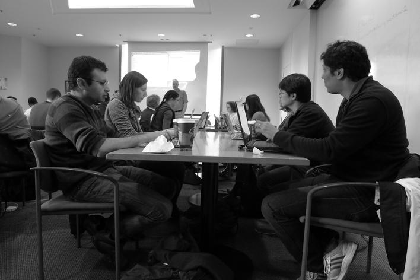

Doug Latornell and Matt Davis taught in "Room B" at the recent University of Washington boot camp. It was a great group of very enthusiastic students! Thanks also to our very capable helpers Jake Vanderplas and David Leen!

Here's our traditional good/bad feedback:
| Good | Bad |
|---|---|
| Learning about Python and NumPy, especially the practice exercises. | Too much shell stuff (already shell proficient). |
| We talked about best practice issues in software development. | Difficult to keep up with instructor when switching between screens. |
| Great holistic crash course on Python and git. Did well with a range of expertise the room. | Too much typing while trying to listen. |
| Overall great intro to many great topics. | Would have preferred basic Python scripting instead of NumPy intro. |
| The one-on-one help and the exercises. | matplotlib and NumPy were a little dry. |
| Pace was quick, almost too fast, but not quite! | The Python part was rushed and we didn't have time to see all of the code. |
| Intuitive approach. | Command line tutorial was slow (but that was probably necessary for some). |
| Intro to IPython Notebook. | A bit too fast in some content. |
| Very well structured. Good collection of topics for introduction. Staff very responsive. | NumPy section could use more exercises/interaction. |
| Very helpful and useful. | Wanted to learn about SciPy. |
| The existence of Software Carpentry and the integrated exercises. | The software engineering felt too rushed -- if I made an error in my code I easily fell behind and was lost. |
| Wanted just Python. |
Originally posted 2013-03-01 by Matt Davis in University of Washington.
comments powered by Disqus